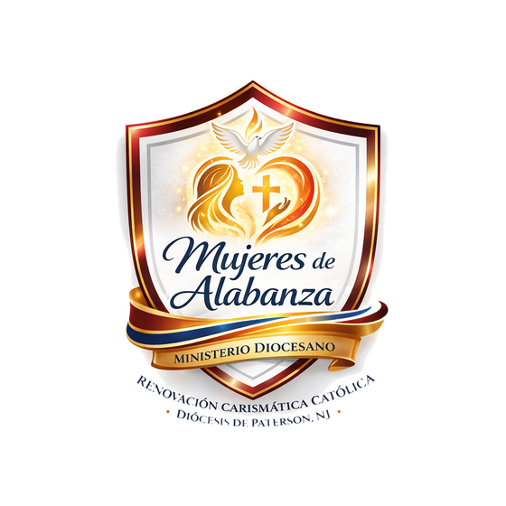
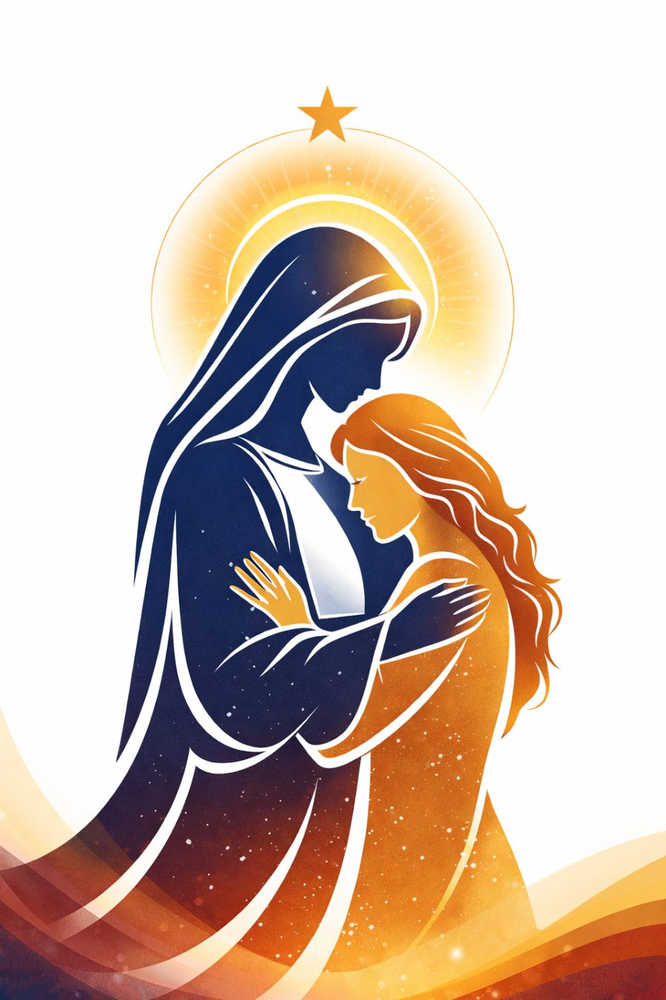

Mujeres consagradas a la adoración, inspiradas en María.

Las Mujeres de Alabanza son un grupo de mujeres consagradas al servicio de la adoración dentro de la RCC de la Diócesis de Paterson. Su misión es glorificar a Dios con sus voces y dones, abriendo los corazones de la comunidad a la presencia del Espíritu Santo mediante el canto y la alabanza.
Se inspiran en María como “la primera adoradora del Nuevo Testamento”, en cuatro momentos marianos como modelo: la Anunciación (el “sí” de fe, Lc 1:38), el Magníficat (alabanza profética, Lc 1:46-55), Caná (intercesión sencilla, Jn 2:3-5) y Pentecostés (perseverancia en oración, Hch 1:14).
Fundamento bíblico adicional: Salmo 68:26 y Éxodo 15:20-21 (Miriam guiando al pueblo con el pandero), Efesios 5:19, Colosenses 3:16. Buscan ser adoradoras genuinas, mujeres de la Palabra, humildes, obedientes al liderazgo y de testimonio de vida coherente — creen que “la mujer que alaba levanta su casa”.
“Si hoy estás atravesando momentos de dolor, angustia, tristeza o confusión, no estás sola. Dios conoce tu corazón y ve tus lágrimas... Como María, Madre que permanece junto a sus hijos en el dolor y en la esperanza, queremos acompañarte con un corazón disponible y confiado en Dios.”
— Carta Pastoral, Mujeres de Alabanza · RCC Paterson NJ